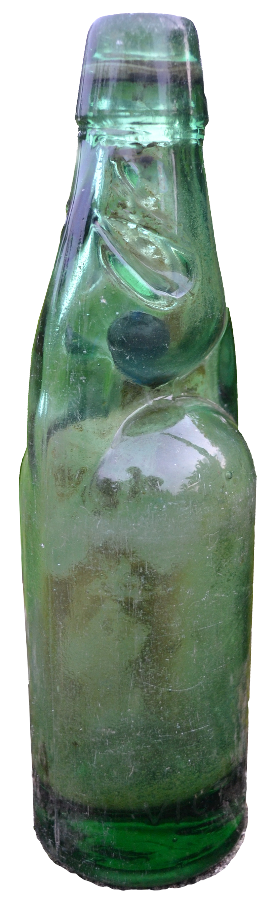

The Old Shelf / India / Delhi banta lemon soda
Delhi banta lemon soda
Indiastills only
An unbranded Codd-neck soda water bottle from Kerala, India; no brand sponsorship is implied.

An unbranded Codd-neck soda water bottle from Kerala, India; no brand sponsorship is implied.
Viswaprabha. CC BY-SA 3.0. Source page

More from India
Shaktimaan towel capeChandrakanta Sunday slotHindi DuckTales and TaleSpin Sunday slotParle-G biscuitFrooti tetra packsRasna glassesUncle ChippsCamlin geometry boxNatraj pencil boxSteel tiffinChalked white PT shoesPhantom chalk candyKismi elaichi toffeeCampa Cola shelfBinaca toothpaste animal charmUnlit Diwali chakriUnlit Diwali anarUnlit Diwali phuljhariHoli pichkariGulalMakar Sankranti kitePosham Pa hand-gate gameCyber cafe